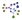

Table of Contents
Nodes and edges are elements of a graph. This is their meaning in ProViz:
- node
- a protein or complex or small molecule...
- edge
- interaction
Two main parts can be distinguished in this window:
This is the window that displays the graph representing protein interactions. Two mouse modes are proposed for interacting with this window. These modes can be switched in the toolbar In normal mouse mode, it is possible to zoom in and out and to move in the view.
Using the mouse wheel it is possible to zoom and navigate very efficiently in the graph. Moving up the mouse wheel will zoom in and will bring the item designated by the mouse cursor towards the center of the view. Moving down the mouse wheel will do exactly the opposite: zoom out and move the item away from the center of the view.
One good example to understand this feature is to think of it applied to a map: simply point to a region on it and it will zoom in the direction of that region; once that region occupies the entire view one may want to see another region in the direction of, say, north-east: just move the mouse in the north-east (up-right in the view) and zoom out.
It is also possible to pan the view without changing the zoom level. puts the mouse in move mode, the graph will move as mouse moves. Release the key and the button to stop.
The slider "Scale nodes" allows adjusting in real time the size of the nodes on the current view (which is different from the current graph view) and all of its descendants. The scaling factor may vary between -100 and 100 by step of 1. 0 is the original size. When a satisfying scale has been set, this one can be saved by clicking the "Save" button. This has the effect of setting the new size has the new "normal" size, and the scale value returns to 0. So, if 100 isn't enough simply save and scale larger again.
Warning
This does not save to the file, just values in memory.
Left clicking on an element will select it for viewing properties.
In this mode all normal mouse and keyboard functions are disabled. This mode allows you to zoom forward on an area of the graph view. In order to achieve this just Left-click on the graph view and hold the mouse button down while moving the mouse. The area is drawn while moving the mouse so that you can see on what you intend to zoom on. Release the button to perform the zoom. If you begin drawing the area but want to abort the operation, you can hit Esc key or Right-click (do not release the mouse Left button before).
This is the tree of the views. A view is a subset of elements of the root graph. It can be created by selection from another view (see controlled vocabulary tree). Clicking on a view will show it in the current graph view. A Right click on a view opens a pop-up menu allowing to:
Remove the view, preserving its descendant
Remove All: destroys the view and its descendants
Rename the view
Note
The root graph cannot be removed
The view options are shared by all graphs views.
The Background Color button allows changing the background color of the graphs views. Its own background color is the actual background color. When clicked, it opens a standard color selection dialog, Ok validates the color.
The "Display labels" checkbox allows displaying of the proteins labels when checked.
A file in tlp format can be opened with
File->Open( ). If the file loading is a success, the View
tab presents the hierarchy of views, all graph views are destroyed
but one showing the root view; the controlled vocabulary trees are updated and
corresponds to the current graph. If the file is the first loaded in that session, then all interface elements are
enabled.
). If the file loading is a success, the View
tab presents the hierarchy of views, all graph views are destroyed
but one showing the root view; the controlled vocabulary trees are updated and
corresponds to the current graph. If the file is the first loaded in that session, then all interface elements are
enabled.
PSI canonical form files (*.xml; *.xml.gz) can be imported into ProViz; use File->Import. The rest of the operation acts just as opening a normal file.
The current file can be saved with File->Save
( ). It can be saved under a new name, possibly
compressed by appending ".gz" to its name, with File->Save
As.
). It can be saved under a new name, possibly
compressed by appending ".gz" to its name, with File->Save
As.
Note
PSI files are to be saved under ProViz's native file format; although the Save menu is enabled, it will open the Save As dialog.
The last entries in the File menu are filenames found in the most recent files opened. This list of recently opened files is currently limited to 4 items. Since PSI files are imported datas, they are not taken in account in this list.
In the File menu, Print( ) and Save PNG image will respectively print and save as
a PNG image the current graph view
) and Save PNG image will respectively print and save as
a PNG image the current graph view
Two help mecanism are availaible in ProViz: this manual, browsable within the application
Help->Index( ), and "What's this" contextual help, which provides
more a detailed description of an interface element than tooltips'.
), and "What's this" contextual help, which provides
more a detailed description of an interface element than tooltips'.
Sometimes it can be annoying to zoom backward to see the whole graph. View->Center view() will reset the graph displaying so that all elements of the current view can be seen in the graph view tab.
ProViz offers the possibility to apply some predefined layouts to a view. It is important to remember that each view inherits the layout of its parent, unless it has its own. An inherited layout change whenever the parent's layout is changed. When a child view is applied a particular layout, the parent's one is left unchanged. Those layouts are available in the toolbar or in View->Layouts.
As of ProViz 1.0, three layouts are available:
- GEM
- GEM layout. Help in finding key points in a network of interactions. Be warned that the speed of computing decreases as the graph size increases
- Hierarchical
- Hierarchical layout. Can help in detecting metabolic pathways or gene regulation networks
- Circular
- Circular. A simple, yet neutral layout
Controlled vocabulary terms are associated with interaction graph elements by means of element properties. A term describing the function of a protein is indicated in the “intact_go_ac” property of an element.
Both type of controlled vocabulary are represented in Proviz as trees, and are presented on the screen with the same conventions.
Items in the graphical tree are controlled vocabulary terms, and elements are elements of the graph, i.e nodes or edges.
Items in the controlled vocabulary list have different color depending on their meaning:
- Gray (disabled color)
thie term is not associated with any element.
- Black (normal color)
If the whole graph is viewed, this term has no corresponding element in the graph, but at least one of its descendant has. Using it in a selection gives a non empty graph. If the current graph is a selection of the whole graph, this color means that this term or one of its descendant could possibly have an element associated with it.
- Cyan
this term is associated at least one element in the current graph
- Blue
this item was selected for creating the current view. The only exception is when viewing the root graph where we consider that no item was selected to create it.
It is possible to select a number of GO-terms in the list and to add a filter based on the GO-evidence. Terms are selected or deselected simply by a click on a term. All of its children are selected (or deselected, respectively) in turn. Subsets of them can be chosen by selecting a filter using one of the Radio Buttons in the Evidence filter group.
Once a set of terms has been selected, several actions are possible on the current graph on the set of elements corresponding to the selected terms. We will refer to this set of elements as the selection in the current graph.
- Select
selects proteins and their interactions in the current graph according to the selected terms
- View
the graph in the current view is replaced by a new graph containing only the selected elements.
- View in new tab
Same as above, except that the resulting graph is placed in a new tab
It is possible to lookup for CV terms by search on a regular expression. The Find group presents a text field and a Next button. The search is perform on the CV description, not its code. The expected regular expression are like shell's one:
- normal characters
- exact match
- *
- matches zero or more of any characters
- ?
- matches any single character
- [...]
- set of characters
Example 2.1.
the string "*foo?abe" matches "blahfoolabe" but not "blahfoolmabe"
Each time the Next is pushed, the cursor in the CV tree is moved to next matching occurence. When there's no more matching term, the status bar displays "No more occurences". The search automatically restart from the beginning whenever the search expression is changed.
When an element has been selected, its properties are displayed in that tab.
[D]
This is the list of all properties found for the selected protein or interactions. Proteins and interaction share the same set of properties. A property is a key (the property name) with an associated value (the field Value in the list).
Note
This list does not allow editing the properties values.
The Selected checkbox reflects the actual state of the element: whether it is included in the current selection or not. This state can be changed.
Sometimes external information source is available. The Links group presents a list of links. The WebBrowser Mozilla is launched upon a click on those links.
Note
ProViz does not guess the links, they are provided by the graph datas
The comment text fied can be used to annotate an element. To annotate or modify a comment simply select the text field and type in. The comment will be automatically saved in memory.
The property panel presents a Find group which works just like for the controlled vocabulary panels. The only variant is the presence of a combo-box which allows to choose on what property ProViz will perform the search. Properties which are not of type "string" (i.e. numerical for example) are not present in this list. Each time the Next button is pressed the next matching protein is selected in the properties panel.